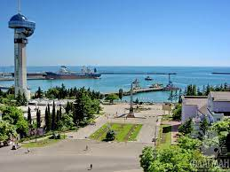
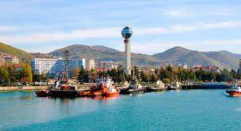
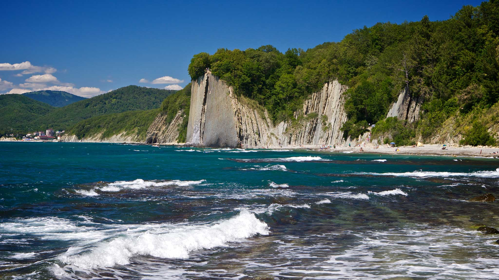

Путешествие по Туапсе
Официальный сайт города:
Туапсе
Информация о городе и историческая справка:
Административный центр Туапсинского района Краснодарского края и одновременно Туапсинского городского поселения. Расположен на восточном берегу Чёрного моря в предгорьях Главного Кавказского хребта. Площадь 33,41 км². Население — 63 185 чел. (2014 год). Город находится на побережье Чёрного моря в предгорьях Главного Кавказского хребта. Устье рек Туапсе и Паук. Самое раннее упоминание адыгейского слова Туапсе (от «туапсэ» — «двуречье», «местность, лежащая ниже слияния двух рек» — река Туапсе, образована слиянием двух горных рек — Чилипси (Чылэпсы) и Пшенахо (Псынэф) встречается в VI—II веках до н. э. (в греческой транскрипции — Топсида). Уже тогда в этом месте существовало поселение шапсугов (один из адыгских субэтносов), которое было крупным центром работорговли. Туапсе находится в зоне влажного субтропического климата. Самые холодные месяцы - январь и февраль - имеют положительную среднемесячную температуру около +5 оС. Лето начинается с конца апреля и длится до сентября включительно. В этот период преобладают солнечные теплые, умеренно-влажные погоды. Среднемесячная температура самых жарких месяцев июля и августа +23оС. Основные отрасли экономики города — нефтепереработка, транспортная отрасль, пищевое производство. Туапсе — один из ключевых транспортных узлов Черноморского побережья РФ. Расположение города определяет его ключевое значение для обеспечения наземной связи с курортной столицей страны — городом Сочи, а также делает важным пунктом в поставках за рубеж сырьевой продукции страны (нефти, удобрений, угля и т. п.). В городе Туапсе представлены несколько крупных предприятий автотранспорта, железнодорожного и морского транспорта. Промышленно-транспортная специфика городской экономики препятствует развитию туристической отрасли, несмотря на благоприятные климатические и природные условия. В этой связи Туапсе является промежуточным пунктом для туристов, направляющихся на курорты Туапсинского района — Небуг, Агой, Ольгинку, Шепси, а также курорты соседнего Лазаревского района города Сочи.
Источник: admtuapse.ru - Официальный сайт администрации г. Туапсе
Фотогаллерея



Достопремичательности:
| Скала Киселёва |
|
| Дальмен |
 |
Гимн:
Горы Кавказа и Черное море -
Твоя колыбель, Туапсе!
С годами мужая и с бедами споря,
Расцвел в несказанной красе.
Припев:
Славься, наш Туапсе!
Пусть над тобой всегда
Реет Российский флаг,
Счастья горит звезда!
Ты наш причал родной,
Нашей судьбы маяк!
Пусть же над всей землей
Слава гремит твоя!
В дни испытаний суровых Отчизны
Ты насмерть сражался в бою!
Свыше дано нам и ныне и присно
Славить отвагу твою!
Туапсе